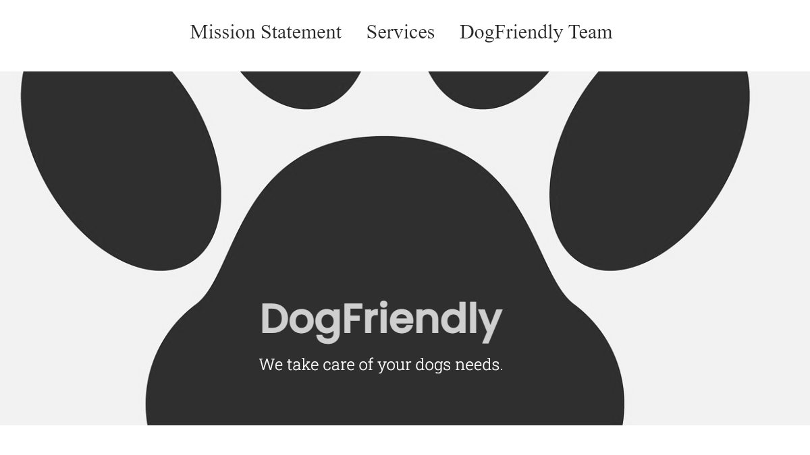
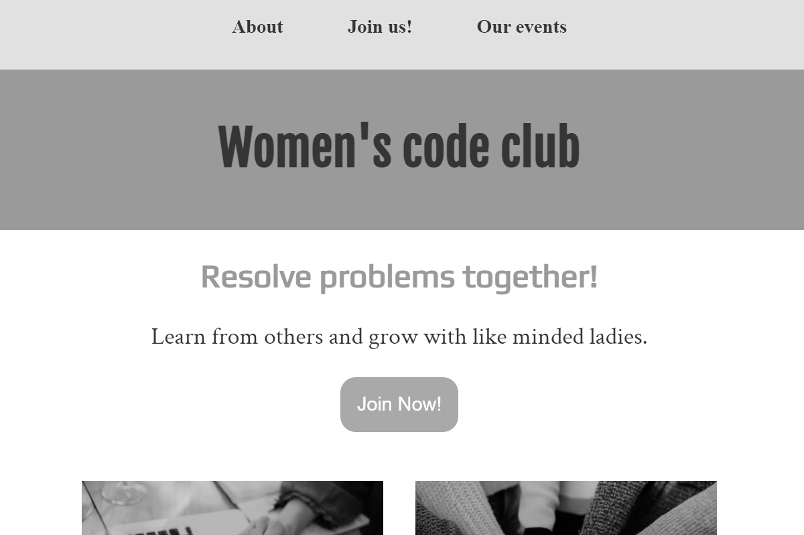

About me
Who am I?
My name is Heini-Maria Kotipelto and I love creating things that live on the internet. My interest in web development started as a hobby when I decided to try and create a webpage for my blog— Although I was using a WordPress template and not coding the sites by myself it kindled the spark to want to learn more about how it is done from scratch.
Fast-forward to today, and I've just finalized the course to become a Front-end Engineer. My next goal is to get to build accessible, inclusive products and digital experiences and work with real clients.

Skills
- HTML
- CSS
- JavaScript
- Git
- GitHub
- WordPress
Projects
Here are some examples of projects I've done so far

A static website project for imaginary service

A resposive website for an imaginary club